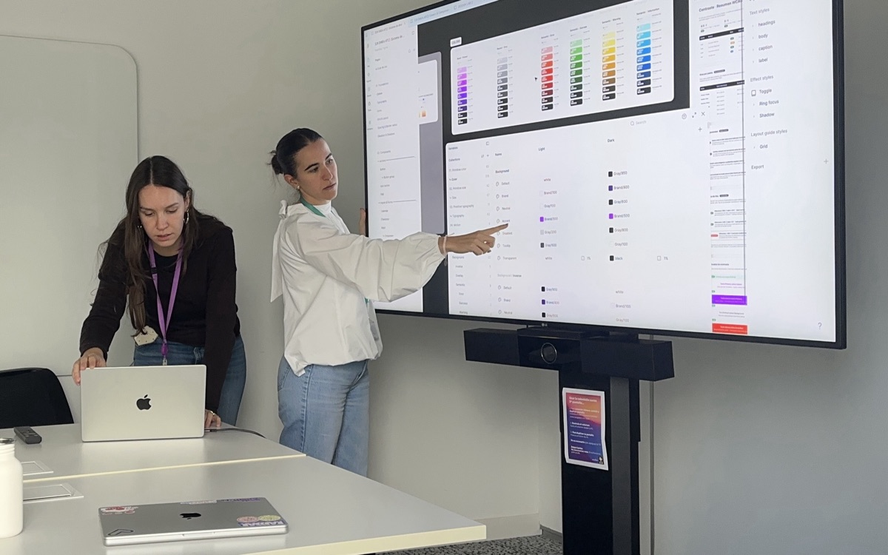

Internal project · White-label design system
Description
Creation of a white-label design system as a base for future projects and quick client proposals, so that other designers do not start from scratch when a client without a design system comes along. Developed almost entirely with artificial intelligence (Claude Code).
It starts from a base with the core components for both web pages and portals (AEM, LumApps, etc.), all 100% configurable. Separately, an independent file gathers the components for mobile app design, on both iOS and Android.
 Internal project
Internal projectWhat it involved
- Analysis of white-label design systems.
- Creation of a complete, responsive and accessible system.
- 100% configurable components, designed for the web and for portals such as AEM or LumApps.
- A separate file with the mobile app design components, for iOS and Android.
- Exploration of Claude Code’s limitations and of the right prompts to get the best result.
- Refinement of the components once generated by Claude.
- Consistent, logical variables, designed to be changed easily and to reduce the time needed to adapt the system to each project.
- Complete documentation of the system in .md files, ready to hand over to the development team.
- Workshops to teach other designers how to use it.
Tools
 Figma
Figma Claude Code
Claude Code
Structure
The system is split across three interconnected files, each with a different purpose.
Covers & Components
The master reference file. Cover templates, flow cover components (primary, secondary, variations and edge cases), annotation frames and workshop slides, all built with the Figma plugin API.
Design System
A fully documented component library for the EMEA ATC team. 17 components, each with an overview, specifications, accessibility, properties and a frame with the description for development, all generated by the documentation agent.
Designs (working file)
Where the real product flows live. It contains the reference flow (sign-up, 12 screens) and its complete documentation with the cover and annotation system, used as the reference result during Workshop 2.
Workshops
Two hands-on workshops designed to onboard the EMEA ATC team to AI-assisted Figma workflows.

Session 1 · Starting a work process
We showed how to start a work process with the newly created files. Since the design system already existed, the first step was to duplicate it and adapt its variables to the client’s requirements and brand. We also covered how to connect Claude Code to the working file, so it can work on it directly and speed up design tasks.
Session 2 · Documenting flows
We then moved on to complete flows: how to name layers and frames, how the cover system works, and a short five-step prompt routine to annotate a flow. The group practiced on a sign-up flow, each person in their own copy of the files.
The aim was for every attendee to leave with something working in their own Figma file, not just an idea of what is possible.